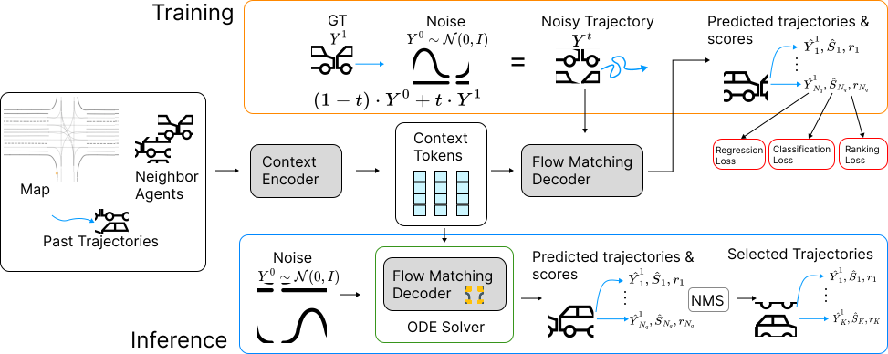

Vehicle agent

Vehicle agent

Cyclist agent

Pedestrian agent
Vehicle agent
Vehicle agent
Cyclist agent
Pedestrian agent
Efficient and accurate motion prediction is crucial for ensuring safety and informed decision-making in autonomous driving, particularly under dynamic real-world conditions that necessitate multi-modal forecasts. We introduce TrajFlow, a novel flow matching-based motion prediction framework that addresses the scalability and efficiency challenges of existing generative trajectory prediction methods. Unlike conventional generative approaches that employ i.i.d. sampling and require multiple inference passes to capture diverse outcomes, TrajFlow predicts multiple plausible future trajectories in a single pass, significantly reducing computational overhead while maintaining coherence across predictions. Moreover, we propose a ranking loss based on the Plackett- Luce distribution to improve uncertainty estimation of predicted trajectories. Additionally, we design a self-conditioning training technique that reuses the model's own predictions to construct noisy inputs during a second forward pass, thereby improving generalization and accelerating inference. Extensive experiments on the large-scale Waymo Open Motion Dataset (WOMD) demonstrate that TrajFlow achieves state-of-the- art performance across various key metrics, underscoring its effectiveness for safety-critical autonomous driving applications. The code and other details are available on the project website https://traj-flow.github.io/.

Overview of motion prediction via flow matching. The input scene, including agent history and a road map, is encoded into context tokens via a transformer. During training, noise sampled i.i.d. from a normal distribution is added to the ground truth (GT) trajectory to create a linear interpolation. The denoiser, conditioned on these tokens, predicts denoised trajectories that align with the GT. We use a trajectory regression loss for waypoint prediction, a classification loss for confidence score modeling, and a Plackett-Luce distribution-based ranking loss for uncertainty calibration, in order to encourage realistic and diverse motion predictions. During inference, trajectories are sampled from pure noise at flow time t=0 and refined through ODEs, yielding a plausible future motion distribution.
@article{yan2025trajflow,
title={TrajFlow: Multi-modal Motion Prediction via Flow Matching},
author={Yan, Qi and Zhang, Brian and Zhang, Yutong and Yang, Daniel and White, Joshua and Chen, Di and Liu, Jiachao and Liu, Langechuan and Zhuang, Binnan and Shi, Shaoshuai and others},
journal={arXiv preprint arXiv:2506.08541},
year={2025}
}